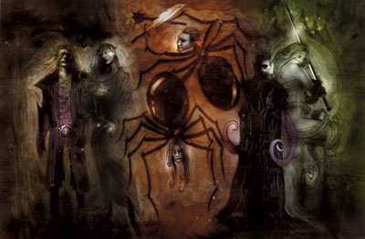

关纳德 Ghaunadaur（软泥怪之神）

（右二）
黑暗精灵神系 弱等神力
别称：潜伏者 That Which Lurks，上古之眼 the Elder Eye
圣徽：一个紫色圆圈，由一个深紫色内环和黑色外环勾勒而成。中心有一个带黑边的深浅紫色交错填充的眼睛。
居住界域：深坑魔网 Demonweb Pits
阵营：混乱邪恶 CE
神职：软泥怪 oozes，黏怪 slimes，果冻怪 jellies，流放 outcasts，树绳妖 ropers，背叛者 rebels
信徒：底栖魔鱼，黑暗精灵，战士，软泥怪，流放者，树绳妖
牧师阵营：混乱中立 CN，邪恶中立 NE，混乱邪恶 CE
神域：洞穴 Carven，混乱 Chaos，邪恶 Evil，卓尔 Drow，憎恨 Hatred，黏怪 Slime
喜好武器：形状不定的触手 A amorphous tentacle（战锤 warhammer）
关纳德是一位无法以常理测度的神o，有些不虔诚的信徒可能只在仪式中对k进行口头上的赞颂，就能获得神恩（甚至是须耗费极大力量的永久魔法效果）；但也可能惨遭吞噬或永久残废。k极爱观看大型可怕怪物的狩猎与屠戮行动，这些痛苦每每使k感到非常愉悦。当k离开内层异界时，外型看起来既沉默又骇人。根据古老的典籍记载，k那庞大胶质的泥状无定型身躯中止会传出一些像野兽般毫无意义的杂乱噪音，根本称不上是语言－k只能透过心灵联系送出一些简单的讯息。
关纳德的信徒在一些黑暗精灵城市与底栖魔鱼（Aboleth）城市之外各自组成不同的教派，各由一位牧师领导。k的牧师完全无条件地服侍着上古之眼，愿意为了取悦k去做任何事。牧师们所必须遵行的义务非常简单－不管用什么方法，每天都必须定时在k的圣坛前献上祭品，而上古之眼则会回赐奖赏，报以法术或魔法物品。在大多数情形下，k较喜爱享用不会挣扎反抗的祭品（不论是遭魅惑或被牧师压制皆可），k也非常重视与眷顾那些能按时献上祭品的牧师。此外，k也鼓励自 己的牧师使用（并制造）酸液、毒素、以及炽炎胶（Alchemist's fire）。
信奉关纳德的牧师在每日于祭坛前献祭时祈祷以获得 神术。k要求牧师们必须在祈祷时赞颂（奉承）k，并献上祭品。如果无法取得活祭品，那k也会（暂时）接受以骨骸或食物献祭，并要求牧师将祭品投入烧着香油的火盆之中。如果连这种程度的献祭都做不到，那么该位牧师就必须在祈祷时将一只手伸入火中烧灼（不可倚靠魔法保护），方可获得神术。当对关纳德进行祈祷与 献祭时，信徒们都必须穿着标有k巨眼圣徽的各色祭袍（祭袍的颜色不拘，只要是k喜爱的颜色－深紫、暗红、墨黑、或金属光泽皆可）。许多信奉关纳德的牧师都会兼职成为附魔师或战士。
历史/与众神的关系 History/Relationship：
关纳德是一位古老的神o，传 说就是他创造了最初的软泥怪。有许多大型的软泥怪、胶质怪、蛞蝓等之类的蠕行生物都是k的信徒－在传说中，这些生物原本都拥有高度的智慧（虽然或许与人类不同），但关纳德却为了某些信徒逾矩的冒犯而愤怒地降下神罚，取走它们原有的智慧，结果k的信徒数量与神力都因此大幅衰退。直到最近的一千年以来，才另有 邪恶生物开始信奉潜伏者－也正是因为有为数不少的黑暗精灵因不满罗丝而改奉关纳德，因此k才会被列入黑暗精灵神系之中。k没有任何盟友，且几乎仇视每一位与幽暗地域有关的神o（包括马拉）、以及席德瑞恩众神（Seldarine，即精灵众神）。
教义 Dogma：
每个生物 在尘世间都必定有发挥其力量的一席之地－有些人负责淘汰弱者、强化族群的整体素质与力量；有些人则离开族群，设法为其民族找到更好的生活方式。强力的生物 就应当享有充满精力的生活－那正是关纳德的力量所在与象征意义。汝当奉献祭品给上古之眼，并让其它人也信奉k。汝当明了关纳德的力量，惧怕k的力量，直至最后心悦诚服地将自己献祭给k。汝当让所有的生命都前来敬拜关纳德、杀掉其它异教徒的牧师、掠夺异教徒们的神殿、使用异教徒的财富扩展关纳德的信仰（或自 己的库藏）。
--
资料来源：费伦大陆信仰与神系《Faiths & Pantheons》
译者：一凡